La ídea principal de este capítulo es aproximar una función \(f\) cualquiera por un miembro de la familia más conocida y más sencilla de tratar: los polinomios.
Recordemos que un polinomio de grado \(n\) tiene una expresión de la forma siguiente:
\[ P_n(x) = a_nx^n + a_{n-1}x^{n-1} + \cdots + a_1x + a_0 = \sum_{i=0}^na_ix^i, \]
con \(a_n \neq 0\) para que tenga grado \(n\).
Los valores \(a_i\), \(i=0,1,\ldots,n\) se denominan coeficientes del polinomio \(P_n\).
Cuanto “mejor” sea la función “\(f\)” a aproximar, es decir, cuanto más alto sea el valor de \(k\) donde \(f \in \mathcal C^k\), mejor control sobre el error cometido en la aproximación se tendrá, al menos teóricamente.
Al expresar la información mediante una fórmula polinómica, se facilitan operaciones como el cálculo de valores intermedios, la interpolación y la predicción de comportamientos futuros, derivación e integración.
Se supone por ejemplo que se tiene una tabla que relaciona la viscosidad dinámica del agua con la temperatura
| T ºC | \(\mu_o\) |
|---|---|
| 0 | 1.787 |
| 5 | 1.519 |
| 10 | 1.307 |
| 20 | 1.002 |
¿Cómo estimar la viscosidad a una temperatura de 7.5º C? Una opción es encontrar un polinomio que pase por los puntos de la tabla y estimar el valor de 7.5 con él.
En este capítulo se presentarán dos técnicas para aproximar una función mediante un polinomio: la interpolación, que ajusta el polinomio pasando exactamente por los datos, y la aproximación por mínimos cuadrados, que busca minimizar el error global cuando no es posible (o deseable) que el polinomio pase por todos los puntos.
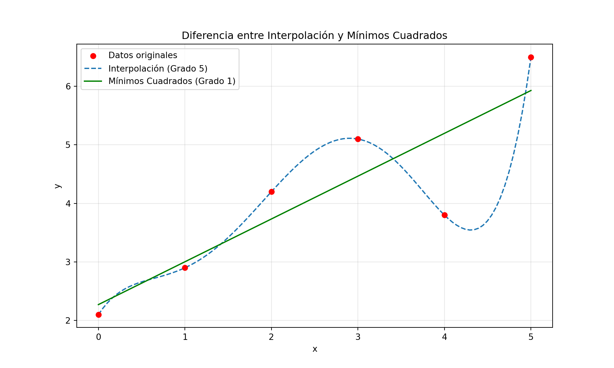
Si el polinomio \(P_n(x)\) se escribe en la forma:
\[ P_n(x)=a_0+a_1x+a_2x^2+\cdots+a_nx^n \]
Se necesitan menos operaciones para evaluarlo en un punto \(x_0\) si se escribe:
\[ P_n(x) = a_0 + x(a_1 + x(\cdots (a_{n-2} + x(a_{n-1} + x a_n)) \cdots )) \]
El algoritmo de Horner es un algoritmo que permite evaluar un polinomio en un punto \(x_0\) de forma eficiente, para ello se define
\[\begin{align*} b_n & = a_n\\ b_{k} & = a_{k} + x_0 b_{k+1}, \forall k \in \mathbb{N}, 0 \leq k < n\\ P_n(x_0) & = b_0 \end{align*}\]
Además, si se llama \[ Q_{n-1}(x) = b_nx^{n-1} + b_{n-1}x^{n-2} + b_{n-2}x^{n-2} + \cdots + b_2x + b_1 \]
Se tiene que \(P_n(x) = (x-x_0)Q_{n-1}(x)+b_0\) y por lo tanto \(P'_n(x_0)=Q_{n-1}(x_0)\)
FUNCIÓN HORNER(a, x0)
# ENTRADA:
# a: Una lista o array de coeficientes del polinomio, donde a[i] es el coeficiente de x^i.
# Es decir, a = [a_0, a_1, ..., a_n].
# x0: El punto en el que se desea evaluar el polinomio.
# SALIDA:
# P_n(x0): El valor del polinomio evaluado en x0.
# Función auxiliar recursiva para calcular b_k
FUNCIÓN _HORNER_RECURSIVO(coefs, x_val, k)
# Caso base: Si k es el índice del coeficiente de mayor grado (a_n),
# entonces b_n = a_n.
SI k == longitud(coefs) - 1 ENTONCES
RETORNAR coefs[k]
FIN SI
# Paso recursivo: b_k = a_k + x0 * b_{k+1}
RETORNAR coefs[k] + x_val * _HORNER_RECURSIVO(coefs, x_val, k + 1)
FIN FUNCIÓN
# La evaluación del polinomio P_n(x0) es b_0.
# Iniciamos la recursión para calcular b_0.
RETORNAR _HORNER_RECURSIVO(a, x0, 0)¿Por qué es Importante el Algoritmo de Horner?
Eficiencia: Es más eficiente que calcular las potencias de \(x_0\) y multiplicar por los coeficientes de forma individual (se usa menos memoria y tiempo de cómputo).
Estabilidad: Reduce errores de redondeo en cálculos numéricos.
Derivadas: Permite obtener información sobre la derivada del polinomio en el mismo punto.
División Sintética: Está relacionado con el método de divisíon sintética para polinomios, lo que lo hace muy útil en el campo del álgebra y el análisis numérico.
Tenemos el polinomio: \[ P_3(x) = 2x^3 - 3x^2 + 4x - 1 \] Y queremos evaluarlo en \(x_0 = 2\) y también calcular \(P'_3(2)\).
Solución
Para el polinomio \(P_3(x) = 2x^3 - 3x^2 + 4x - 1\) y \(x_0 = 2\).
Los coeficientes del polinomio son \(a = [-1, 4, -3, 2]\), donde \(a_0 = -1\), \(a_1 = 4\), \(a_2 = -3\) y \(a_3 = 2\).
Paso 1: Evaluar \(P_3(2)\) usando el Algoritmo de Horner.
Aplicamos la fórmula \(b_k = a_k + x_0 b_{k+1}\) de arriba hacia abajo (desde \(k=n\) hasta \(k=0\)):
Por lo tanto, \(P_3(2) = b_0 = 11\).
Paso 2: Evaluar \(P'_3(2)\) usando el Algoritmo de Horner.
Sabemos que \(P'_n(x_0) = Q_{n-1}(x_0)\), donde \(Q_{n-1}(x) = b_nx^{n-1} + b_{n-1}x^{n-2} + \cdots + b_2x + b_1\). En nuestro caso, \(Q_2(x) = b_3x^2 + b_2x + b_1 = 2x^2 + 1x + 6\).
Los coeficientes para \(Q_2(x)\) son \(c = [6, 1, 2]\), donde \(c_0 = 6\), \(c_1 = 1\) y \(c_2 = 2\). Aplicamos el Algoritmo de Horner a \(Q_2(x)\) en \(x_0 = 2\):
Por lo tanto, \(P'_3(2) = Q_2(2) = d_0 = 16\).
Verificación (opcional):
Podemos verificar los resultados calculando el polinomio y su derivada de forma directa:
\(P_3(x) = 2x^3 - 3x^2 + 4x - 1\) \(P_3(2) = 2(2)^3 - 3(2)^2 + 4(2) - 1 = 2(8) - 3(4) + 8 - 1 = 16 - 12 + 8 - 1 = 4 + 8 - 1 = 12 - 1 = 11\).
\(P'_3(x) = 6x^2 - 6x + 4\) \(P'_3(2) = 6(2)^2 - 6(2) + 4 = 6(4) - 12 + 4 = 24 - 12 + 4 = 12 + 4 = 16\).
Los resultados coinciden.
# Implementación del algoritmo de Horner en Python para verificar
import numpy as np
def horner_eval(a, x0):
"""
Evalúa un polinomio en un punto x0 usando el algoritmo de Horner.
a: lista de coeficientes [a_0, a_1, ..., a_n]
x0: punto de evaluación
"""
n = len(a) - 1
b = [0] * (n + 1)
b[n] = a[n]
for k in range(n - 1, -1, -1):
b[k] = a[k] + x0 * b[k+1]
return b[0], b # Retorna P(x0) y los coeficientes b_k
# Coeficientes del polinomio p_3(x) = 2x^3 - 3x^2 + 4x - 1
# a = [a_0, a_1, a_2, a_3]
a = [-1, 4, -3, 2]
x0 = 2
# Evaluar p_3(2)
p_x0, b_coeffs = horner_eval(a, x0)
print(f"p_3({x0}) = {p_x0}") # Debería ser 11## p_3(2) = 11# Los coeficientes b_k son [b_0, b_1, b_2, b_3]
# Para la derivada, usamos [b_1, b_2, b_3] como los coeficientes del polinomio Q(x)
# Q(x) = b_3*x^2 + b_2*x + b_1
# Los coeficientes para Q(x) son [b_1, b_2, b_3]
q_coeffs = b_coeffs[1:] # [6, 1, 2]
# Evaluar Q(2) para obtener p'_3(2)
p_prime_x0, _ = horner_eval(q_coeffs, x0)
print(f"p'_3({x0}) = {p_prime_x0}") # Debería ser 16## p'_3(2) = 16Para justificar la aproximación de una función \(f\) por polinomios veamos el Teorema de Weierstrass que dice básicamente que cualquier función continua puede aproximarse por un polinomio con un error tan pequeño como se quiera:
Teorema de Weierstrass.
Sea \(f \in \mathcal{C}^0[a,b]\) una función continua en un intervalo \([a,b]\). Entonces dado un valor \(\epsilon>0\), existe un polinomio \(P_n(x)\) de un grado determinado \(n\) tal que:
\[ |f(x)−P_n(x)|<\epsilon, \]
para todo valor \(x \in [a,b]\).
El problema que intentamos resolver es el siguiente:
Problema: Dados \(n+1\) valores \((x_0,y_0), (x_1,y_1), \dots, (x_n,y_n)\), se desea hallar polinomio \(P_n\) de grado mínimo tal que \(P_n(x_i)=y_i,\, i=0,\ldots,n\).
Es decir, dados \(n+1\) puntos en el plano, hallar un polinomio de grado mínimo, (más adelante veremos que dicho grado es \(n\)) tal que \(P_n(x_i)=y_i,\, i=0,\ldots,n\).
Observaciones:
Si los puntos son parte de la gráfica de una función \(f\), entonces \(y_i=f(x_i)\) y las condiciones que debe verificar el polinomio \(P_n(x)\) son \(P_n(x_i)=f(x_i),\, i=0,\ldots,n\).
Se tiene en total \(n+1\) condiciones, por tanto, el número de incógnitas debe ser \(n+1\). Pensemos que un polinomio de grado \(n\) tiene en total \(n+1\) coeficientes.
Sea pues \(P_n(x)=a_0+a_1x+\cdots+a_nx^n\) el polinomio a hallar.
Las condiciones \(P_n(x_i)=y_i\) serían las siguientes en función de los coeficientes \(a_i\), \(i=0,\ldots,n\):
\[ a_0+a_1x_i+\cdots+a_nx_i^n=y_i,\quad i=0,\ldots,n. \]
Los coeficientes \(a_i\) deben verificar el siguiente sistema de ecuaciones lineales:
\[ \begin{cases} a_0+a_1x_0+\cdots+a_nx_0^n=y_0,\\ a_0+a_1x_1+\cdots+a_nx_1^n=y_1,\\ \vdots\\ a_0+a_1x_n+\cdots+a_nx_n^n=y_n. \end{cases} \]
Este sistema lineal tiene solución única y tiene por determinante del sistema el siguiente:
\[ D=\begin{vmatrix} 1 & x_0 & x_0^2 & \cdots & x_0^n\\ 1 & x_1 & x_1^2 & \cdots & x_1^n\\ \vdots & \vdots & \vdots & \ddots & \vdots\\ 1 & x_n & x_n^2 & \cdots & x_n^n \end{vmatrix} \]
El determinante anterior se llama determinante de Vandermonde y su valor es: \[ \prod_{0\leq i<j\leq n}(x_i-x_j). \]
Por tanto, si \(x_i\neq x_j\) para \(i\neq j\), el determinante del sistema no será cero y tendremos solución única para nuestro problema.
En resumen, tenemos el teorema siguiente:
Teorema.
Sean \((x_0,y_0),(x_1,y_1),\ldots,(x_n,y_n)\), \(n+1\) valores con \(x_i\neq x_j\) para \(i\neq j\) (es decir, las abscisas son todas diferentes). Entonces existe un único polinomio \(P_n(x)\) de grado \(n\) tal que \(P_n(x_i)=y_i\), \(i=0,\ldots,n\).
El método de Lagrange para interpolación polinomial resulta de resolver el sistema de Vandermonde para obtener los coeficientes pero lo hace de una forma más sencilla y sistemática.
Se construye el polinomio interpolador de forma explícita en función de unos polinomios especiales denominados polinomios interpoladores de Lagrange:
Polinomios de Lagrange.
Sean \(x_0,\ldots,x_n\), \(n+1\) nodos donde suponemos que \(x_i \neq x_j\), para \(i\neq j\). Se define el polinomio de Lagrange \(L_{k}(x)\) de grado \(n\) asociado al nodo \(x_k\) de la forma siguiente:
\[\begin{align*} L_{k}(x)& = \dfrac{(x-x_0)(x-x_1)\cdots(x-x_{k-1})(x-x_{k+1})\cdots(x-x_n)}{(x_k-x_0)(x_k-x_1)\cdots(x_k-x_{k-1})(x_k-x_{k+1})\cdots(x_k-x_n)}\\ & =\prod_{\substack{0\leq i\leq n\\i\neq k}}\frac{x-x_i}{x_k-x_i} \end{align*}\]
Los polinomios de Lagrange verifican la proposición siguiente:
Sean \(x_0,\ldots,x_n\), \(n+1\) nodos donde suponemos que \(x_i \neq x_j\), para \(i\neq j\). Sean \(L_{k}(x)\) el polinomio de Lagrange de grado menor o igual a \(n\) asociado al nodo \(x_k\). Entonces dicho polinomio verifica que:
\[ L_{k}(x_k)=1\quad\text{y}\quad L_{k}(x_i)=0\quad\text{para}\quad i\neq k. \]
Consideremos los nodos \(x_0=0,\, x_1=1,\, x_2=3,\, x_3=5\).
Los polinomios de Lagrange asociados a los nodos anteriores son los siguientes:
\[\begin{align*} L_0(x) & = \dfrac{(x-1)(x-3)(x-5)}{(0-1)(0-3)(0-5)} = \dfrac{1}{-15}(x^3-9x^2+23x-15)\\ L_1(x) & = \dfrac{(x-0)(x-3)(x-5)}{(1-0)(1-3)(1-5)} = \dfrac{1}{8}(x^3-8x^2+15x)\\ L_2(x) & = \dfrac{(x-0)(x-1)(x-5)}{(3-0)(3-1)(3-5)} = \dfrac{1}{-12}(x^3-6x^2+5x)\\ L_3(x) & = \dfrac{(x-0)(x-1)(x-3)}{(5-0)(5-1)(5-3)} = \dfrac{1}{40}(x^3-4x^2+3x) \\ \end{align*}\]
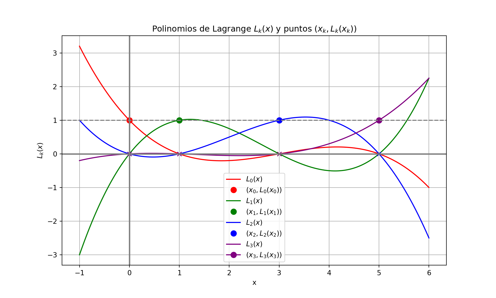
El Teorema siguiente nos dice cómo calcular el polinomio interpolador a partir de los polinomios de Lagrange:
Teorema.
Sean \((x_0,y_0),(x_1,y_1),\ldots,(x_n,y_n)\), \(n+1\) puntos con \(x_i\neq x_j\) para \(i\neq j\), y con \(y_i=f(x_i)\) para \(i=0,\ldots,n\). Entonces el polinomio interpolador \(P_n(x)\) que pasa por dichos puntos se puede escribir de la siguiente forma:
\[\begin{align*} P_n(x)&=y_0L_0(x)+y_1L_1(x)+\cdots+y_nL_n(x)\\ &=\sum_{k=0}^{n}y_kL_k(x). \end{align*}\]
donde \(L_k(x)\) es el polinomio de Lagrange correspondiente al nodo \(x_k\), \(k=0,\ldots,n\).
Calculemos el polinomio interpolador en los nodos \(x_0=0\), \(x_1=1\), \(x_2=3\), \(x_3=5\) para la función \(f(x)=x\cdot\sin\left(\frac{\pi}{2}\cdot x\right)\).
Los puntos de interpolación serían \((0,0)\), \((1,1)\), \((3,-3)\), \((5,5)\).
El polinomio interpolador \(P_3(x)\) que pasa por dichos puntos se puede escribir de la siguiente forma:
\[\begin{align*} P_3(x)&=y_0L_0(x)+y_1L_1(x)+y_2L_2(x)+y_3L_3(x)\\ &=0\cdot L_0(x)+1\cdot L_1(x)-3\cdot L_2(x)+5\cdot L_3(x)\\ &=1\cdot\left(\frac{1}{8}(x^3-8x^2+15x)\right)-3\cdot\left(\frac{1}{-12}(x^3-6x^2+5x)\right)+5\cdot\left(\frac{1}{40}(x^3-4x^2+3x)\right)\\ &= 0.5x^3-3x^2+3.5x \end{align*}\]
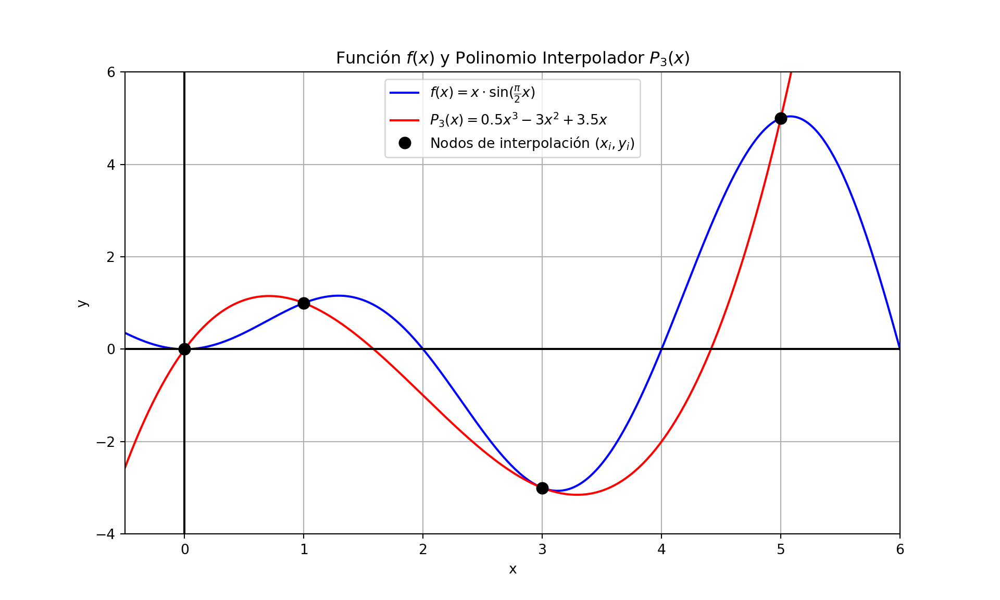
Interpolar una función \(f\) en unos nodos determinados puede interpretarse como una manera de aproximar la función \(f\) en un entorno de los nodos, es decir, en un dominio que esté relativamente cerca de dichos nodos.
Es fundamental estimar de alguna manera el error cometido en un valor cualquiera cuando se intenta aproximar una función. El Teorema siguiente nos da una expresión del error cometido cuando aproximamos una función \(f\) por un polinomio interpolador:
Teorema.
Sea \(f \in C^{n+1}[a, b]\) y \(P_n(x)\) el polinomio de interpolación en los \(n + 1\) puntos distintos \(x_0 = a, x_1, \ldots, x_n = b\), entonces para cada \(x \in [a, b]\) existe \(\xi(x) \in I[x_0, x_1, \ldots, x_n, x]\) (el intervalo cerrado más pequeño que contiene \(x_0, x_1, \ldots, x_n, x\)) tal que
\[\begin{align*} E(x)&=f(x)-P_n(x)\\ &=\dfrac{f^{(n+1)}(\xi(x))}{(n+1)!}\prod_{k=0}^{n}(x-x_k) \end{align*}\]
donde \(\xi(x)\) es un punto en el intervalo \([a,b]\).
La expresión del error cometido al aproximar la función \(f(x)=x\cdot\sin\left(\frac{\pi}{2}x\right)\) en el ejemplo 3 es:
\[\begin{align*} E(x)&=f(x)-P_3(x)\\ &=\dfrac{f^{(4)}(\xi(x))}{4!}\cdot x\cdot(x-1)\cdot(x-3)\cdot(x-5) \end{align*}\]
Hallando \(f^{(4)}(x)\):
\[\begin{align*} f'(x) & = \sin\left(\frac{\pi}{2}x\right)+\frac{\pi}{2}x\cdot\cos\left(\frac{\pi}{2}x\right)\\ f''(x)& = \pi\cos\left(\frac{\pi}{2}x\right)-\frac{\pi^2}{4}x\cdot\sin\left(\frac{\pi}{2}x\right)\\ f'''(x)& = -\frac{3\pi^2}{4}\sin\left(\frac{\pi}{2}x\right)-\frac{\pi^3}{8}x\cdot\cos\left(\frac{\pi}{2}x\right)\\ f^{(4)}(x)& = -\frac{\pi^3}{2}\cos\left(\frac{\pi}{2}x\right)+\frac{\pi^4}{16}x\cdot\sin\left(\frac{\pi}{2}x\right) \end{align*}\]
La expresión del error es:
\[ f(x) - P_3(x) = \dfrac{\pi^3}{384} \left[ -8\cos\left(\dfrac{\pi \xi(x)}{2}\right) + \pi \xi(x) \sin\left(\dfrac{\pi \xi(x)}{2}\right) \right] x(x-1)(x-3)(x-5) \]
Imaginemos que queremos acotar el error cometido \(|f(x)−P_3(x)|\) para todo valor de \(x\) en el intervalo \([0,5]\). Entonces, tendremos:
\[ |E(x)|=|f(x) - P_3(x)| \leq \dfrac{\pi^3(8+5\pi)}{384} \cdot \max_{x \in [0,5]} |x(x-1)(x-3)(x-5)| \]
Ahora para hallar \(\max_{x \in [0,5]} |x(x-1)(x-3)(x-5)|\) debemos hallar el valor máximo de la función \(h(x)=x(x-1)(x-3)(x-5) = x^4 - 9x^3+23x^2-15x\) en el intervalo \([0,5]\), el cual se encuentra dentro del intervalo \((0,5)\), ya que \(h(0)=0\) y \(h(5)=0\).
\[ h'(x) = 4x^3 - 27x^2 + 46x - 15 \]
El siguiente paso es resolver la ecuación \(h'(x)=0\), para resolver esta ecuación, se puede usar un método numérico de los vistos en la unidad III. Eligiendo adecuadamente los valores iniciales se llega a los siguientes ceros:
\[ \begin{align*} x_1 &= 0.4257862 \quad |h(x_1)| = 2.878898\\ x_2 &= 2.0704646 \quad |h(x_2)| = 6.035382\\ x_3 &= 4.2537492 \quad |h(x_3)| = 12.949453 \end{align*} \]
Por lo tanto, el valor máximo de \(|h(x)|\) en el intervalo \([0,5]\) es \(12.949453\).
Por lo tanto, el valor máximo de \(|E(x)|\) en el intervalo \([0,5]\) es \(\dfrac{\pi^3(8+5\pi)}{384} \cdot 12.949453 \approx 24.7892891.\).
La cota del error obtenida es una cota “teórica”. Si se representa el valor absoluto del error exacto: \(|E(x)| = |f(x) − P_3(x)|\) se obtiene la siguiente figura:
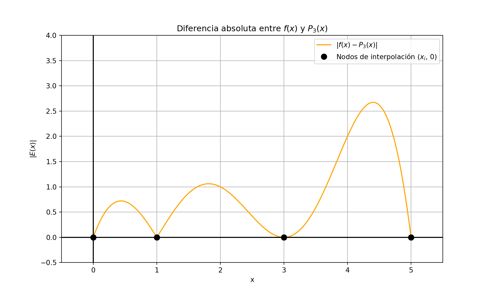
Si se hubiese acotado la derivada \(f^{(4)}(x)\) hallando el valor máximo dentro del intervalo \([0,5]\) se hubiese obtenido una cota más fina.
Desventajas del método de Lagrange
El polinomio no viene expandido.
La interpolación para otro valor de \(x\) necesita la misma cantidad de cálculos adicionales, ya que no se pueden utilizar partes de la aplicación previa.
La incorporación de un nuevo nodo obliga a rehacer todos los cálculos.
La evaluación del error no es fácil.
A veces no es necesario obtener la forma explícita del polinomio interpolador y basta con obtener su valor numérico en un punto dado.
Además en este caso se desea poder aumentar el orden del polinomio interpolador a voluntad y parar cuando el error sea suficientemente pequeño.
Para estos propósitos la interpolación iterada está especialmente indicada.
Definición.
Sea \(f\) una funcíon definida en \(x_0, \ldots, x_n\) y supongamos \(m_0, \ldots, m_k\) sean \(k + 1\) enteros distintos con \(0 \leq m_i \leq n\) para cada \(i = 0, \ldots, k\). El polinomio de Lagrange de grado menor o igual a \(k\) que coincide con \(f\) en \(x_{m_0}, \ldots, x_{m_k}\) se denota \(P_{m_0,\ldots,m_k}\).
Sea \(f(x) = x^3\), \(x_0 = 1\), \(x_1 = 2\), \(x_2 = 3\), \(x_3 = 4\), \(x_4 = 6\), calcule \(P_{0,3,4}(x)\) y \(P_{1,2,4}(x)\).
\[\begin{align*} P_{0,3,4}(x) &= L_0(x)f(x_0)+L_3(x)f(x_3)+L_4(x)f(x_4)\\ & =\dfrac{(x-4)(x-6)}{(1-4)(1-6)}\cdot 1^3+\dfrac{(x-1)(x-6)}{(4-1)(4-6)}\cdot 4^3+\dfrac{(x-1)(x-4)}{(6-1)(6-4)}\cdot 6^3\\ & = 11x^2-34x+24 \end{align*}\]
\[\begin{align*} P_{1,2,4}(x) &= L_1(x)f(x_1)+L_2(x)f(x_2)+L_4(x)f(x_4)\\ & =\dfrac{(x-3)(x-6)}{(2-3)(2-6)}\cdot 2^3+\dfrac{(x-2)(x-6)}{(3-2)(3-6)}\cdot 3^3+\dfrac{(x-2)(x-3)}{(6-2)(6-3)}\cdot 6^3\\ & = 10x^2-27x+18 \end{align*}\]
Teorema.
Sea \(f\) definida en \(x_0, \ldots, x_k\), \(k+1\) puntos distintos y sea \(x_i,\, x_j\) dos números distinto en este conjunto. Entonces el Polinomio de Interpolación de Lagrange de grado menor o igual a \(k\) que interpola a \(f\) en \(x_0, \ldots, x_k\) puede escribirse como:
\[ P(x) = \dfrac{(x-x_i)P_{0,\ldots,i-1,i+1,\ldots,k}(x)-(x-x_j)P_{0,\ldots,j-1,j+1,\ldots,k}(x)}{(x_j-x_i)} \]
El método de Neville es un método iterativo que permite calcular el valor de un polinomio de interpolación de Lagrange en un punto dado.
El método de Neville nos permite hallar los distintos polinomios de interpolación de forma recursiva.
Los polinomios interpoladores de Lagrange de grado 0 serían:
\[ P_i = f(x_i) \quad i = 0, \ldots, n \]
\[ P_{i,i+1} = \dfrac{(x-x_i)P_{i+1}-(x-x_{i+1})P_{i}}{(x_{i+1}-x_i)}, \quad \forall i=0,\ldots,n-1 \]
\[ P_{i,i+1,i+2} = \dfrac{(x-x_i)P_{i+1,i+2}-(x-x_{i+2})P_{i,i+1}}{(x_{i+2}-x_i)}, \quad \forall i=0,\ldots,n-2 \]
Y así sucesivamente hasta obtener el polinomio interpolador de grado \(n\).
Los polinomios generados anteriormente se pueden escribir en forma de tabla de la siguiente manera:
| \(x_i\) | \(P_i\) | \(P_{i-1,i}\) | \(P_{i-2,i-1,i}\) | \(P_{i-3,i-2,i-1,i}\) | \(\cdots\) |
|---|---|---|---|---|---|
| \(x_0\) | \(P_0\) | ||||
| \(x_1\) | \(P_1\) | \(P_{0,1}\) | |||
| \(x_2\) | \(P_2\) | \(P_{1,2}\) | \(P_{0,1,2}\) | ||
| \(x_3\) | \(P_3\) | \(P_{2,3}\) | \(P_{1,2,3}\) | \(P_{0,1,2,3}\) | \(\cdots\) |
| \(\vdots\) | \(\vdots\) | \(\vdots\) | \(\vdots\) | \(\vdots\) | \(\vdots\) |
Notación: Se denota por \(Q_{i,j}\) el polinomio interpolante de Lagrange de grado \(j\) que pasa por los \(j + 1\) nodos siguientes \(x_{i-j},x_{i-j+1},\ldots,x_{i}\), es decir \[ Q_{i,j}=P_{i-j,i-j+1,\ldots,i}(x) \]
Usando el método de Neville
\[\begin{align*} Q_{i,j} & = \dfrac{(x-x_i)P_{i-j,i-j+1,\ldots,i-1}-(x-x_{i-j})P_{i-j+1,\ldots,i}}{(x_{i-j}-x_i)}\\ & = \dfrac{(x-x_{i-j})P_{i-j+1,i-j+1,\ldots,i}-(x-x_{i})P_{i-j,\ldots,i-1}}{(x_{i}-x_{i-j})}\\ & = \dfrac{(x-x_{i-j})Q_{i,j-1}-(x-x_{i})Q_{i-1,j-1}}{(x_{i}-x_{i-j})} \end{align*}\]
Con esta nueva notación se puede obtener el valor del polinomio interpolador de Lagrange en un punto \(x\) de la siguiente manera:
| \(x_i\) | \(Q_{i,0}\) | \(Q_{i,1}\) | \(Q_{i,2}\) | \(Q_{i,3}\) | \(\cdots\) |
|---|---|---|---|---|---|
| \(x_0\) | \(Q_{0,0}\) | ||||
| \(x_1\) | \(Q_{1,0}\) | \(Q_{1,1}\) | |||
| \(x_2\) | \(Q_{2,0}\) | \(Q_{2,1}\) | \(Q_{2,2}\) | ||
| \(x_3\) | \(Q_{3,0}\) | \(Q_{3,1}\) | \(Q_{3,2}\) | \(Q_{3,3}\) | \(\cdots\) |
| \(\vdots\) | \(\vdots\) | \(\vdots\) | \(\vdots\) | \(\vdots\) | \(\vdots\) |
FUNCIÓN Neville(x, y, x_eval)
# Entrada:
# x: Vector de nodos de interpolación [x0, x1, ..., xn].
# y: Vector de valores de la función [y0, y1, ..., yn] correspondientes a los nodos.
# x_eval: El punto en el que se desea evaluar el polinomio interpolador.
# Salida:
# El valor del polinomio interpolador en x_eval.
**Pasos**:
# Establecer n <- length(x).
# Para i <- 0, 1, ..., n:
* Q[i,0] <- y[i].
# Para k <- 1, 2, ..., n:
* Para i <- k, k+1, ..., n:
* frac <- 1/(x[i] - x[i-k])
* Q[i,k] <- ((x_eval - x[i-k])*Q[i,k-1] - (x_eval - x[i])*Q[i-1,k-1])*frac
# El resultado es Q[n,n].Sean los nodos \((0,0)\), \((1,1)\), \((3,-3)\) y \((5,5)\). Se quiere hallar el valos \(P_n(2)\), usando el método de Neville.
La tabla de Neville es la siguiente:
| \(x_i\) | \(Q_{i,0}\) | \(Q_{i,1}\) | \(Q_{i,2}\) | \(Q_{i,3}\) |
|---|---|---|---|---|
| \(x_0=0\) | \(Q_{0,0}=0\) | |||
| \(x_1=1\) | \(Q_{1,0}=1\) | |||
| \(x_2=3\) | \(Q_{2,0}=-3\) | |||
| \(x_3=5\) | \(Q_{3,0}=5\) |
Calcular \(Q_{1,1}\): \[ Q_{1,1}=\dfrac{(2-0)Q_{1,0}-(2-1)Q_{0,0}}{1-0}=\dfrac{2\cdot 1-1\cdot0}{1}=2 \] Calcular \(Q_{2,1}\): \[ Q_{2,1}=\dfrac{(2-1)Q_{2,0}-(2-3)Q_{1,0}}{3-1}=\dfrac{1\cdot(-3)-(-1)\cdot1}{2}=-1 \] Calcular \(Q_{3,1}\): \[ Q_{3,1}=\dfrac{(2-3)Q_{3,0}-(2-5)Q_{2,0}}{5-3}=\dfrac{(-1)\cdot5-(-3)\cdot(-3)}{2}=-7 \] Calcular \(Q_{2,2}\): \[ Q_{2,2}=\dfrac{(2-0)Q_{2,1}-(2-3)Q_{1,1}}{3-0}=\dfrac{2\cdot(-1)-(-1)\cdot2}{3}=0 \] Calcular \(Q_{3,2}\): \[ Q_{3,2}=\dfrac{(2-1)Q_{3,1}-(2-5)Q_{2,1}}{5-1}=\dfrac{1\cdot(-7)-(-3)\cdot(-1)}{4}=-2.5 \] Calcular \(Q_{3,3}\): \[ Q_{3,3}=\dfrac{(2-0)Q_{3,2}-(2-0)Q_{2,2}}{5-0}=\dfrac{2\cdot(-2.5)-2\cdot0}{5}=-1 \]
La tabla de Neville es la siguiente:
| \(x_i\) | \(Q_{i,0}\) | \(Q_{i,1}\) | \(Q_{i,2}\) | \(Q_{i,3}\) |
|---|---|---|---|---|
| \(x_0=0\) | \(0\) | |||
| \(x_1=1\) | \(1\) | \(2\) | ||
| \(x_2=3\) | \(-3\) | \(-1\) | \(0\) | |
| \(x_3=5\) | \(5\) | \(-7\) | \(-2.5\) | \(-1\) |
El valor del polinomio interpolador de Lagrange en el punto \(x=2\) es \(Q_{3,3}=-1\).
Imaginemos que se añade un nuevo punto a interpolar, digamos el \((6,0)\) y se quiere hallar el valor del nuevo polinomio interpolador en \(x=2\) en los puntos anteriores y \((6,0)\).
Para hallar dicho valor podemos aprovechar la tabla anterior. Sólo tenemos que calcular una nueva fila para hallar el valor del polinomio interpolador en \(x=2\):
Calcular \(Q_{4,1}\): \[ Q_{4,1}=\dfrac{(2-5)Q_{3,0}-(2-6)Q_{4,0}}{6-5}=\dfrac{-3\cdot0-(-4)\cdot5}{1}=20 \] Calcular \(Q_{4,2}\): \[ Q_{4,2}=\dfrac{(2-3)Q_{4,1}-(2-6)Q_{3,1}}{6-3}=\dfrac{-1\cdot20-(-4)\cdot(-7)}{3}=-16 \] Calcular \(Q_{4,3}\): \[ Q_{4,3}=\dfrac{(2-1)Q_{4,2}-(2-6)Q_{3,2}}{6-1}=\dfrac{1\cdot(-16)-(-4)\cdot(-2.5)}{5}=-5.2 \] Calcular \(Q_{4,4}\): \[ Q_{4,4}=\dfrac{(2-0)Q_{4,3}-(2-6)Q_{3,3}}{6-0}=\dfrac{2\cdot(-5.2)-(-4)\cdot(-1)}{6}=-2.4 \] La tabla de Neville es la siguiente:
| \(x_i\) | \(Q_{i,0}\) | \(Q_{i,1}\) | \(Q_{i,2}\) | \(Q_{i,3}\) | \(Q_{i,4}\) |
|---|---|---|---|---|---|
| \(x_0=0\) | \(0\) | ||||
| \(x_1=1\) | \(1\) | \(2\) | |||
| \(x_2=3\) | \(-3\) | \(-1\) | \(0\) | ||
| \(x_3=5\) | \(5\) | \(-7\) | \(-2.5\) | \(-1\) | |
| \(x_4=6\) | \(0\) | \(20\) | \(-16\) | \(-5.2\) | \(-2.4\) |
Sea \(f \in C^1[a, b]\) con \(f'(x) \neq 0\) en \([a, b]\) y que \(f\) posee un cero \(p\) en \([a, b]\).
Sea \(x_0, \ldots, x_n\) \(n + 1\) números distintos en \([a, b]\) con \(f(x_k) = y_k\) para cada \(k = 0, \ldots, n\).
Si se quiere aproximar \(p\), se construye el polinomio interpolante de grado \(n\) en los nodos \(y_0, \ldots, y_n\) para \(f^{-1}\).
Puesto que \(y_k = f(x_k)\) y \(0 = f(p)\), se deduce que \(f^{-1}(y_k) = x_k\) y \(p = f^{-1}(0)\).
Se da el nombre de interpolación iterada inversa al uso de la interpolación para aproximar \(f^{-1}(0)\).
En ocasiones es útil considerar varios polinomios aproximantes \(P_1(x),\, P_2(x),\, \ldots,\, P_n(x)\) y, después, elegir el más adecuado a las necesidades.
Uno de los inconvenientes de los polinomios interpoladores de Lagrange es que no hay relación entre la construcción de \(P_{n-1}(x)\) y la de \(P_n(x)\); cada polinomio debe construirse individualmente y se requieren muchas operaciones para calcular polinomios de grado elevado.
Dados \(n + 1\) puntos \((x_0, y_0),\, (x_1, y_1),\, \ldots,\, (x_n, y_n)\) con \(x_0, x_1, \ldots, x_n\) números distintos y \(y_k = f(x_k)\), \(k = 0, 1, \ldots, n\) para alguna funcíon \(f\) definida en un intervalo \([a, b]\) que contiene a los nodos.
El polinomio \(P(x)\) de grado menor o igual a \(n\) que interpola a \(f\) en los datos dados, puede expresarse en la forma:
\[\begin{align*} P_n(x) = & a_0 + a_1(x - x_0) + a_2(x - x_0)(x - x_1) + \cdots + a_n(x - x_0)(x - x_1) \cdots (x - x_{n-1})\\ \end{align*}\]
es decir:
\[ P_n(x) = a_0 + \sum_{j=1}^{n} a_j \prod_{k=0}^{j-1} (x - x_k) \] para ciertas constantes \(a_0, a_1, \ldots, a_n\).
Cálculo de los coeficientes \(a_0, a_1, \ldots, a_n\).
Se puede observar que cada coeficiente \(a_k\) es el coeficiente principal del polinomio \(P_k(x)\) que interpola a \(f\) en los puntos \(x_0, x_1, \ldots, x_k\).
Además este coeficiente depende de los puntos y valores de \(f(x)\) en estos puntos
\[\begin{align*} f(x_0) = & P_0(x_0) = a_0\\ f(x_1) = &P_1(x_1) = f(x_0) + a_1(x_1 − x_0)\\ \Rightarrow a_1 = &\dfrac{f(x_1) - f(x_0)}{x_1 - x_0}\\ f(x_2) = &P_2(x_2) = f(x_0) + a_1(x_2 − x_0) + a_2(x_2 − x_1)\\ \Rightarrow a_2 = &\dfrac{\frac{f(x_2) - f(x_1)}{x_2 - x_1} - \frac{f(x_1) - f(x_0)}{x_1 - x_0}}{x_2 - x_0} \end{align*}\] El numerador es una diferencia de cocientes de diferencias, a cada uno de estos cocientes, se les llama diferencias divididas
Definición:
Dados \(n + 1\) puntos \((x_0; f(x_0));\, (x_1; f(x_1));\, \ldots;\, (x_n; f(x_n))\) con \(x_0; x_1; \ldots; x_n\) números distintos y \(f\) alguna función definida sobre el intervalo \([x_0, x_n]\), se define:
\[ f[x_k] = f(x_k); \forall k = 0; 1; \ldots; n \]
Por lo que en el polinomio interpolante se tiene que \(a_0 = f[x_0]\).
\[ f[x_k, x_{k+1}] = \dfrac{f[x_{k+1}] - f[x_k]}{x_{k+1} - x_k}; \forall k = 0; 1; \ldots; n-1 \]
Por lo tanto en el polinomio interpolante se tiene que \(a_1 = f[x_0; x_1] = \dfrac{f[x_1] − f[x_0]}{x_1 − x_0}\)
\[ f[x_k, x_{k+1}, x_{k+2}] = \dfrac{f[x_{k+1}, x_{k+2}] - f[x_k, x_{k+1}]}{x_{k+2} - x_k}; \forall k = 0; 1; \ldots; n-2 \]
Por lo tanto en el polinomio interpolante se tiene que \(a_2 = f[x_0; x_1; x_2] = \dfrac{f[x_1, x_2] − f[x_0, x_1]}{x_2 − x_0}\)
\[ f[x_k, x_{k+1}, \ldots, x_{k+i}] = \dfrac{f[x_{k+1}, x_{k+2}, \ldots, x_{k+i}] - f[x_k, x_{k+1}, \ldots, x_{k+i-1}]}{x_{k+i} - x_k}; \forall k = 0; 1; \ldots; n-i \]
Por lo tanto en el polinomio interpolante se tiene que \(a_k = f[x_0; x_1; \ldots; x_k] = \dfrac{f[x_1, x_2, \ldots, x_k] − f[x_0, x_1, \ldots, x_{k-1}]}{x_k − x_0}\)
El polinomio interpolador \(P_n(x)\) de la función \(f\) en los nodos \(x_0, x_1, \ldots, x_n\) se puede expresar en función de las diferencias divididas:
\[\begin{align*} P_n(x) = & f[x_0] + f[x_0, x_1](x - x_0)\\ & + f[x_0, x_1, x_2](x - x_0)(x - x_1) + \cdots \\ & + f[x_0, x_1, \ldots, x_n](x - x_0)(x - x_1) \cdots (x - x_{n-1}) \end{align*}\]
Y se conoce como Fórmula Progresiva de Newton del Polinomio de Interpolación.
El polinomio interpolador también puede escribirse como:
\[\begin{align*} P_n(x) = & f[x_n] + f[x_n, x_{n-1}](x - x_n)\\ & + f[x_n, x_{n-1}, x_{n-2}](x - x_n)(x - x_{n-1}) + \cdots\\ & + f[x_n, x_{n-1}, \ldots, x_0](x - x_n)(x - x_{n-1}) \cdots (x - x_1) \end{align*}\]
Y se conoce como Fórmula Regresiva de Newton del Polinomio de Interpolación.
Para el cálculo de las diferencias divididas se puede usar la siguiente tabla:
| \(x_i\) | \(DD_{0}\) | \(DD_{1}\) | \(DD_{2}\) | \(\cdots\) | \(DD_{n}\) |
|---|---|---|---|---|---|
| \(x_0\) | \(f[x_0]\) | ||||
| \(x_1\) | \(f[x_1]\) | \(f[x_0, x_1]\) | |||
| \(x_2\) | \(f[x_2]\) | \(f[x_1, x_2]\) | \(f[x_0, x_1, x_2]\) | ||
| \(\vdots\) | \(\vdots\) | \(\vdots\) | \(\vdots\) | \(\ddots\) | |
| \(x_n\) | \(f[x_n]\) | \(f[x_{n-1}, x_n]\) | \(f[x_{n-2}, x_{n-1}, x_n]\) | \(\cdots\) | \(f[x_0, x_1, \ldots, x_n]\) |
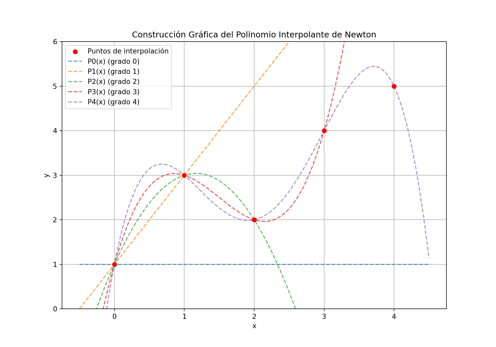
El polinomio interpolante de Newton puede ser utilizado para aproximar la función \(f\) en un intervalo \([a, b]\). Pero puede presentar el fenómeno de Runge.
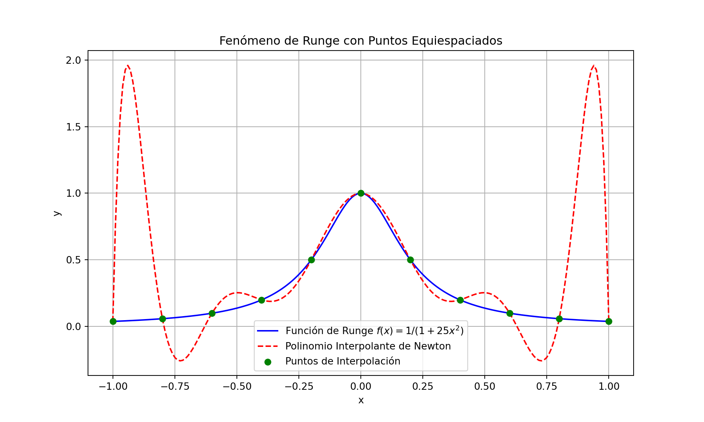
El fenómeno de Runge se debe a que los polinomios de interpolación de Newton pueden oscilar mucho entre los puntos de interpolación, especialmente cuando los puntos están equiespaciados.
Por lo tanto, una alternativa para evitar el fenómeno de Runge es utilizar la Interpolación Cúbica o Spline Cúbicos.
Dados \(n+1\) nodos \(x_0,x_1,\dots,x_n\), se desea hallar en cada subintervalo \([x_i,x_{i+1}]\) un polinomio de grado bajo de tal manera que la función a interpolar tenga grado de derivabilidad lo más alto posible.
En muchas aplicaciones, como por ejemplo en la informática gráfica, es suficiente que la función interpoladora sea de clase \(\mathcal{C}^2\) ya que el ojo humano no distingue grados de derivabilidad superior.
Una primera aproximación es usar polinomios de grado 1 en cada subintervalo \([x_i,x_{i+1}]\), esta consiste en unir los polinomios de grado 1 de forma continua, pero no garantiza que la función interpoladora sea de clase \(\mathcal{C}^2\), es decir, no se garantiza derivabilidad en los puntos de interpolación.
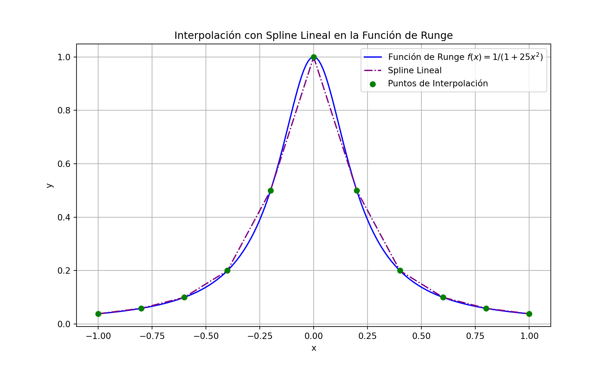
Para solventar el problema anterior, se puede usar Spline Cúbicos en vez de Splines lineales, es decir, sea \(f\) una función definida en un intervalo \([a,b]\) y sean \(a=x_0<x_1<\cdots<x_n=b\) los \(n+1\) nodos en dicho intervalo. Una función spline cúbico interpolador \(S\) para \(f\) es una función que satisface las siguientes condiciones:
1. \(S\) es un polinomio de grado 3 en cada subintervalo \([x_i,x_{i+1}]\), el cual denotaremos como \(S_i\), para \(i=0,1,\dots,n-1\).
2. \(S_i(x_i)=f(x_i)\) y \(S_i(x_{i+1})=f(x_{i+1})\) para \(i=0,1,\dots,n-1\).
3. \(S'_i(x_{i+1})=S'_{i+1}(x_{i+1})\) para \(i=0,1,\dots,n-2\).
4. \(S''_i(x_{i+1})=S''_{i+1}(x_{i+1})\) para \(i=0,1,\dots,n-2\).
5. Una de las siguientes condiciones debe cumplirse:
i. \(S''(x_{0})=S''(x_{n})=0\), frontera natural o libre.
ii. \(S'(x_{0})=f'(x_0)\) y \(S'(x_{n})=f'(x_n)\), frontera sujeta.
Considerse los polinomios cúbicos
\[ S_i(x) = a_i + b_i(x − x_i) + c_i(x − x_i)^2 + d_i(x − x_i)^3\quad \forall i = 0, 1,\ldots , n-1 \] las dos primeras derivadas vienen dadas por \[ S'_i(x) = b_i + 2c_i(x − x_i) + 3d_i(x − x_i)^2 \] \[ S''_i(x) = 2c_i + 6d_i(x − x_i) \]
Veamos cuantas condiciones tenemos:
Veamos un ejemplo de cómo calcular los coeficientes de los polinomios cúbicos.
Sea \(f(x) = \sqrt{x}\) en el intervalo \([0,1]\). Sea \(x_0=0\), \(x_1=0.5\) y \(x_2=1\). Entonces \(f(x_0)=0\), \(f(x_1)=\sqrt{0.5}\) y \(f(x_2)=\sqrt{1}=1\).
Entonces
\[\begin{align*} S_0(x) &= a_0 + b_0(x − x_0) + c_0(x − x_0)^2 + d_0(x − x_0)^3\\ S_1(x) &= a_1 + b_1(x − x_1) + c_1(x − x_1)^2 + d_1(x − x_1)^3 \end{align*}\]
Las condiciones 2 son: \[\begin{align*} S_0(x_0) &= f(x_0) \Rightarrow a_0 = 0\\ S_1(x_1) &= f(x_1) \Rightarrow a_1 = \sqrt{0.5}\\ S_0(x_1) &= f(x_1) \Rightarrow a_0 + b_0(x_1 - x_0) + c_0(x_1 - x_0)^2 + d_0(x_1 - x_0)^3 = \sqrt{0.5}\\ & \Rightarrow b_0(0.5) + c_0(0.5)^2 + d_0(0.5)^3 = \sqrt{0.5}\\ S_1(x_2) &= f(x_2) \Rightarrow a_1 + b_1(x_2 - x_1) + c_1(x_2 - x_1)^2 + d_1(x_2 - x_1)^3 = 1\\ & \Rightarrow b_1(0.5) + c_1(0.5)^2 + d_1(0.5)^3 = 1-\sqrt{0.5}\\ \end{align*}\]
Las condiciones 3 son: \[\begin{align*} S'_0(x_1) &= S'_1(x_1)\\ & \Rightarrow b_0 + 2c_0(0.5) + 3d_0(0.5)^2 = b_1\\ \end{align*}\]
Las condiciones 4 son: \[\begin{align*} S''_0(x_1) &= S''_1(x_1)\\ & \Rightarrow 2c_0 + 6d_0(0.5) = 2c_1 \end{align*}\]
Las condiciones 5.i son: \[\begin{align*} S''_0(x_0) &= 0\\ & \Rightarrow 2c_0 = 0\\ & \Rightarrow c_0 = 0\\ S''_1(x_2) &= 0\\ & \Rightarrow 2c_1 + 6d_1(0.5) = 0 \end{align*}\]
Asi queda entonces el siguiente sistema de ecuaciones: \[ \left\{ \begin{array}{l} 0.5b_0 + 0.125d_0 = \sqrt{0.5}\\ 0.5b_1 + 0.25c_1 + 0.125d_1 = 1-\sqrt{0.5}\\ b_0 + 0.75d_0 = b_1\\ c_1+1.5d_1 = 0\\ 3d_0 = 2c_1 \end{array}\right. \]
Resolviendo el sistema de ecuaciones obtenemos: \[ \begin{bmatrix} 0.5 & 0.125 & 0 & 0 & 0 \\ 0 & 0 & 0.5 & 0.25 & 0.125 \\ 1 & 0.75 & -1 & 0 & 0 \\ 0 & 0 & 0 & 1 & 1.5 \\ 0 & 3 & 0 & -2 & 0 \end{bmatrix} \cdot \begin{bmatrix} b_0 \\ d_0 \\ b_1 \\ c_1 \\ d_1 \end{bmatrix} = \begin{bmatrix} \sqrt{0.5} \\ 1 - \sqrt{0.5} \\ 0 \\ 0 \\ 0 \end{bmatrix} \]
Resolviendo el sistema de ecuaciones obtenemos: \[\begin{aligned} b_0 &= \sqrt{2} + \frac{1}{2}(\sqrt{2}-1)\\ d_0 &= 2(1 - \sqrt{2})\\ b_1 &= 1\\ c_1 &= -3(\sqrt{2} - 1)\\ d_1 &= 2(\sqrt{2} - 1) \end{aligned} \]
Y recordemos que \(a_0=0\) y \(a_1=\sqrt{0.5}\).
Entonces \[ \begin{aligned} S_0(x) &= \sqrt{2} + \frac{1}{2}(\sqrt{2}-1)(x - 0) + 2(1 - \sqrt{2})(x - 0)^3\\ S_1(x) &= \sqrt{0.5} + (x - 0.5) + (-3(\sqrt{2} - 1))(x - 0.5)^2 + 2(\sqrt{2} - 1)(x - 0.5)^3 \end{aligned} \]
## <Figure size 1000x600 with 0 Axes>## [<matplotlib.lines.Line2D object at 0x00000113F6B5C6E0>]## [<matplotlib.lines.Line2D object at 0x00000113F6B5C830>]## [<matplotlib.lines.Line2D object at 0x00000113F6B5C980>]## <matplotlib.collections.PathCollection object at 0x00000113F5FE56D0>## Text(0.5, 1.0, 'Spline Cúbico Natural para $f(x) = \\sqrt{x}$')## Text(0.5, 0, 'x')## Text(0, 0.5, 'y')## <matplotlib.legend.Legend object at 0x00000113F6B5C440>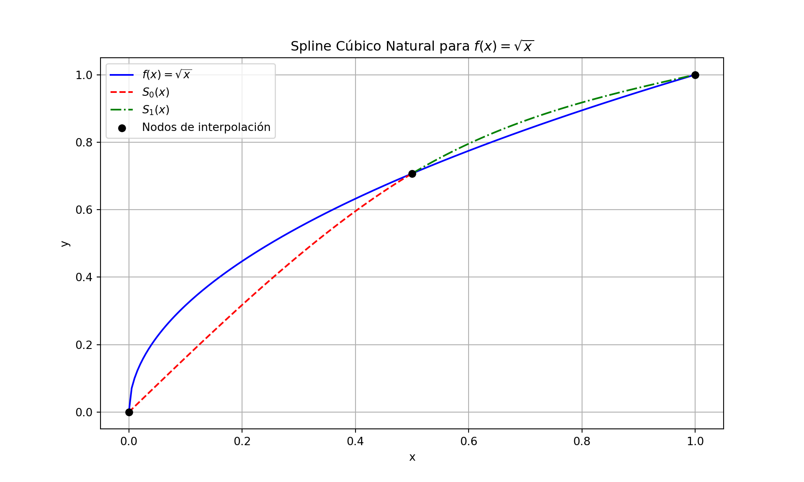
Recordemos que los nodos son los siguientes: \(a=x_0<x_1<\cdots<x_n=b\) y la función a interpolar es f(x). Por tanto, la Spline Interpoladora debe pasar por los puntos \((x_i,f(x_i))\) para \(i=0,1,\ldots,n\).
Recordamos que los polinomios cúbicos son:
\[ S_i(x)=a_i+b_i(x-x_i)+c_i(x-x_i)^2+d_i(x-x_i)^3, \]
donde \(a_i,b_i,c_i\) y \(d_i\) son las incógnitas que debemos calcular para \(i=0,1,\ldots,n-1\).
Como \(S_i(x_i)=f(x_i)\), tenemos que \(a_i=f(x_i)\) para \(i=0,1,\ldots,n-1\). Se ha reducido el número de incógnitas a \(3n\) ya que \(n\) de ellas ya están calculadas (las \(a_i\)).
Las condiciones de continuidad de las funciones \(S_i(x)\) y sus derivadas primera y segunda en los \(n-1\) puntos de interpolación intermedios \(x_{i+1}\), \(i=0,\ldots,n-2\) (las condiciones de continuidad no se aplican a los extremos) dan
\[\begin{align*} a_{i+1} &= a_i + b_i(x_{i+1} − x_i) + c_i(x_{i+1} − x_i)^2 + d_i(x_{i+1} − x_i)^3\\ b_{i+1} &= b_i + 2c_i(x_{i+1} − x_i) + 3d_i(x_{i+1} − x_i)^2\\ 2c_{i+1} &= 2c_i + 6d_i(x_{i+1} − x_i) \end{align*}\]
Esto constituye un sistema de \(3(n-1)\) ecuaciones para determinar los \(3n\) coeficientes \(b_i, c_i\) y \(d_i\).
Ademas, una condición adicional es que el último polinomio debe cumplir \(S_{n-1}(x_n)=f(x_n)\), con \(a_{n}=f(x_n)\).
Se requieren por tanto dos condiciones adicionales para poder determinar todos los coeficientes.
Para simplificar la notación, consideremos \(h_i=x_{i+1}-x_i\) para \(i=0,1,\ldots,n-1\). Entonces
\[\begin{align*} \dfrac{a_{i+1} − a_i}{h_i} & = b_i + c_ih_i + d_ih_i^2\\ b_{i+1}-b_i &= 2c_ih_i + 3d_ih_i^2\\ c_{i+1}-c_i &= 3d_ih_i \end{align*}\]
De las posibles formas de resolver el sistema de ecuaciones anterior, la más comoda es despejar los coeficientes \(d_i\) y \(b_i\) de forma que se obtenga un sistema de ecuaciones para los coeficientes \(c_i\).
De la Última ecuación se despeja \(d_i\) y queda que:
\[ d_i = \frac{c_{i+1}-c_i}{3h_i} \]
\[ b_{i+1}-b_i = 2c_ih_i + 3\left(\frac{c_{i+1}-c_i}{3h_i}\right)h_i^2 = \left(c_i + c_{i+1}\right)h_i \]
\[\begin{align*} b_i &= \frac{a_{i+1}-a_i}{h_i} - c_ih_i - d_ih_i^2\\ &= \frac{a_{i+1}-a_i}{h_i} - c_ih_i - \left(\frac{c_{i+1}-c_i}{3h_i}\right)h_i^2\\ &= \frac{a_{i+1}-a_i}{h_i} - \frac{2}{3}c_ih_i - \frac{1}{3}c_{i+1}h_i \end{align*}\]
\[ b_{i+1} = \frac{a_{i+2}-a_{i+1}}{h_{i+1}} - \frac{2}{3}c_{i+1}h_{i+1} - \frac{1}{3}c_{i+2}h_{i+1} \]
\[\begin{eqnarray*} & b_{i+1}-b_i = &\\ & \frac{a_{i+2}-a_{i+1}}{h_{i+1}} - \frac{2}{3}c_{i+1}h_{i+1} - \frac{1}{3}c_{i+2}h_{i+1} - \left(\frac{a_{i+1}-a_i}{h_i} - \frac{2}{3}c_{i}h_{i} - \frac{1}{3}c_{i+1}h_{i}\right) & \end{eqnarray*}\]
\[ c_{i+2}h_{i+1} + 2c_{i+1}(h_i+h_{i+1}) + c_{i}h_i = \dfrac{3}{h_{i+1}}(a_{i+2}-a_{i+1}) - \dfrac{3}{h_i}(a_{i+1}-a_i) \]
para \(i=0,1,\ldots,n-2\). Conformando un sistema lineal con \(n-1\) ecuaciones y \(n+1\) incógnitas: \(c_0,c_1,\ldots,c_n\) ya que los valores \(a_i=f(x_i)\) son conocidos.
Las dos incógnitas libres de las \(c_i\) quedarán fijadas usando las condiciones 5.i (splines naturales) o 5.ii (splines con frontera fija).
Una vez hallados los coeficientes \(c_i\), podemos hallar los coeficientes \(b_i\) y \(d_i\) a partir de las relaciones anteriores.
Condición 5.i (splines naturales)
Existe un único spline natural interpolador \(S\) de \(f\) en los \(n+1\) nodos. Es decir, \(S\) interpola a los nodos, es de clase \(\mathcal{C}^2\) en \([a,b]\) y además, \(S''(a)=S''(b)=0\).
\[ c_0 = c_n = 0 \]
Esto permite eliminar las incógnitas \(c_0\) y \(c_n\) del sistema lineal anterior. y el sistema queda de la siguiente manera
\[ A = \begin{pmatrix} 2(h_0 + h_1) & h_1 & 0 & \cdots & 0 \\ h_1 & 2(h_1 + h_2) & h_2 & \cdots & 0 \\ \vdots & \vdots & \vdots & \vdots & \\ 0 & 0 & \cdots & h_{n-2} & 2(h_{n-2} + h_{n-1}) \end{pmatrix} \] \[ c = \begin{pmatrix} c_1\\ c_2\\ \vdots\\ c_{n-1} \end{pmatrix}, \quad b = \begin{pmatrix} \dfrac{3}{h_1}(a_2-a_1)-\dfrac{3}{h_0}(a_1-a_0)\\ \dfrac{3}{h_2}(a_3-a_2)-\dfrac{3}{h_1}(a_2-a_1)\\ \vdots\\ \dfrac{3}{h_{n-1}}(a_{n}-a_{n-1})-\dfrac{3}{h_{n-2}}(a_{n-1}-a_{n-2}) \end{pmatrix} \]
Condición 5.ii (splines con frontera fija)
Existe un único spline con frontera fija interpolador \(S\) de \(f\) en los \(n+1\) nodos. Es decir, \(S\) interpola a los nodos, es de clase \(\mathcal{C}^2\) en \([a,b]\) y además, \(S'(a)=f'(a)\) y \(S'(b)=f'(b)\).
De esta manera se agregan dos ecuaciones adicionales al sistema lineal anterior, quedando el sistema lineal de la siguiente manera:
\[ A = \begin{pmatrix} 2h_0 & h_0 & 0 & 0 &\cdots & 0\\ h_0 & 2(h_0 + h_1) & h_1 & 0 & \cdots & 0\\ 0 & h_1 & 2(h_1 + h_2) & h_2 & \cdots & 0\\ \vdots & \vdots & \vdots & \vdots & \vdots & \vdots\\ 0 & 0 & \cdots & 0 & h_{n-1} & 2h_{n-1}\\ \end{pmatrix} \] \[ c = \begin{pmatrix} c_0\\ c_1\\ \vdots\\ c_{n}\\ \end{pmatrix}, \quad b = \begin{pmatrix} \dfrac{3}{h_0}(a_1-a_0)-3f'(x_0)\\ \dfrac{3}{h_1}(a_2-a_1)-\dfrac{3}{h_0}(a_1-a_0)\\ \vdots\\ \dfrac{3}{h_{n-1}}(a_{n}-a_{n-1})-\dfrac{3}{h_{n-2}}(a_{n-1}-a_{n-2})\\ 3f'(x_n) - \dfrac{3}{h_{n-1}}(a_{n}-a_{n-1}) \end{pmatrix} \]
Algoritmo para Coeficientes de Spline Cúbico
**Entrada:**
* x: Vector de nodos [x0, x1, ..., xn].
* y: Vector de valores de función [y0, y1, ..., yn] donde y[i] = f(x[i]).
* tipo_condicion: "natural" o "fija".
* f_prime_x0: (Solo para tipo "fija") Valor de f'(x[0]).
* f_prime_xn: (Solo para tipo "fija") Valor de f'(x[n]).
**Salida:**
* a: Vector de coeficientes a[i].
* b: Vector de coeficientes b[i].
* c: Vector de coeficientes c[i].
* d: Vector de coeficientes d[i].
**Pasos:**
1. **Inicialización:**
* Sea n el número de segmentos (es decir, length(x) - 1).
* h[i] = x[i+1] - x[i] para i=0, ..., n-1.
* a[i] = y[i] para i=0, ..., n.
2. **Construcción del sistema lineal para c:**
* **Si tipo_condicion es "natural":**
* Crea una matriz A de tamaño (n-1) x (n-1) y un vector b_vec de tamaño (n-1).
* Para i=1, ..., n-1:
* A[i-1, i-1] = 2 * (h[i-1] + h[i])
* Si i < n-1: A[i-1, i] = h[i]
* Si i > 1: A[i-1, i-2] = h[i-1]
* b_vec[i-1] = 3/h[i] * (a[i+1] - a[i]) - 3/h[i-1] * (a[i] - a[i-1])
* Resuelve el sistema A * c_mid = b_vec para obtener c_mid = [c[1], ..., c[n-1]]`.
* Define c[0] = 0 y c[n] = 0.
* Combina para formar el vector `c = [c[0], c_mid, c[n]]`.
* **Si `tipo_condicion` es "fija":**
* Crea una matriz `A` de tamaño `(n+1) x (n+1)` y un vector `b_vec` de tamaño `(n+1)`.
* **Primera fila (para c[0]):**
* A[0,0] = 2 * h[0]
* A[0,1] = h[0]
* b_vec[0] = (3/h[0]) * (a[1] - a[0]) - 3 * f_prime_x0
* **Filas intermedias (para c[1] a c[n-1]):**
* Para i=1, ..., n-1:
* A[i, i-1] = h[i-1]
* A[i, i] = 2 * (h[i-1] + h[i])
* A[i, i+1] = h[i]
* b_vec[i] = (3/h[i]) * (a[i+1] - a[i]) - (3/h[i-1]) * (a[i] - a[i-1])
* **Última fila (para c_n):**
* A[n, n-1] = h[n-1]
* A[n, n] = 2 * h[n-1]
* b_vec_n = 3 * f_prime_xn - (3/h[n-1]) * (a[n] - a[n-1])
* Resuelve el sistema A * c = b_vec para obtener el vector c = [c0, ..., cn]`.
3. **Cálculo de `b` y `d`:**
* Para i=0, ..., n-1:
* d[i] = (c[i+1] - c[i]) / (3 * h[i])
* b[i] = (a[i+1] - a[i]) / h[i] - (2/3) * c[i] * h[i] - (1/3) * c[i+1] * h[i]
4. **Retorna** los vectores `a`, `b`, `c`, `d`.En este ejemplo se observa como la Interpolación segmentaria resuelve el fenómeno de Runge antes visto, y presenta opciones cuando la derivada no se puede calcular en alguno de sus extremos
## (-0.5, 1.5)## (-0.5, 1.5)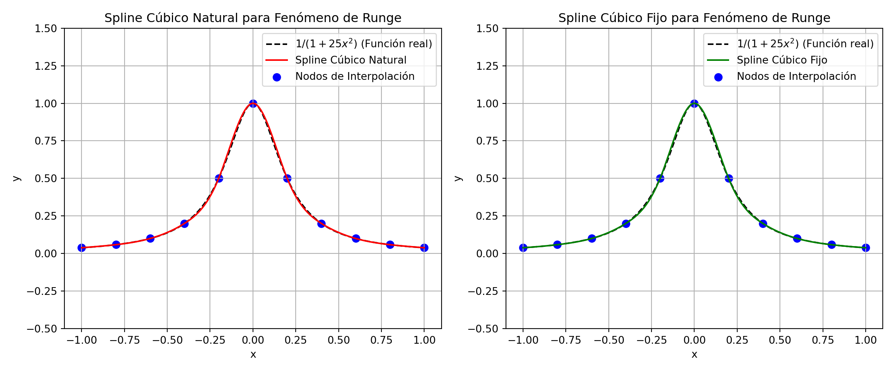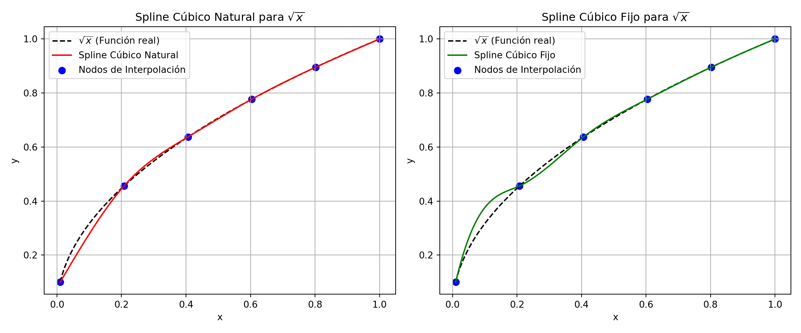
Supongamos que se han medido un conjunto de pares de datos \((x_i, y_i)\) en una experimentación, por ejemplo, la posición de un móvil en ciertos instantes de tiempo.
Se desea obtener una función \(y=f(x)\) que se ajuste lo mejor posible a los valores experimentales. Se pueden ensayar muchas funciones, rectas, polinomios, funciones potenciales o logarítmicas.
Una vez establecida la función a ajustar se determinan sus parámetros, en el caso de un polinomio, serán los coeficientes del polinomio de modo que los datos experimentales se desvíen lo menos posible de la fórmula empírica.
La función más sencilla es la función lineal \(y=ax+b\). El procedimiento de ajustar los datos experimentales a una línea recta se denomina regresión lineal.
Queremos aproximar un polinomio de grado \(n\), a un conjunto de \(m+1\) pares de datos \((x_i, y_i)\) de modo que \(n\leq m\).
Sea el polinomio
\[ P(x) = a_0 + a_1 x + a_2 x^2 + \cdots + a_n x^n \]
\[ S = \sum_{i=0}^{m} (P(x_i)-y_i)^2 = \sum_{i=0}^{m} (a_0 + a_1 x_i + a_2 x_i^2 + \cdots + a_n x_i^n - y_i)^2 \]
Se buscan los valores de los coeficientes \(a_0, a_1, \ldots, a_n\) que minimicen \(S\).
Hagamos las derivadas parciales de S respecto de \(a_0, a_1, a_2, \ldots, a_n\) iguales a cero.
\[ \dfrac{\partial S}{\partial a_0} = 0, \quad \dfrac{\partial S}{\partial a_1} = 0, \quad \ldots, \quad \dfrac{\partial S}{\partial a_n} = 0 \] \[\begin{align*} \dfrac{1}{2}\dfrac{\partial S}{\partial a_0} & = \sum_{i=0}^{m}(a_0 + a_1 x_i + a_2 x_i^2 + \cdots + a_n x_i^n - y_i)\cdot 1=0\\ \dfrac{1}{2}\dfrac{\partial S}{\partial a_1} & = \sum_{i=0}^{m}(a_0 + a_1 x_i + a_2 x_i^2 + \cdots + a_n x_i^n - y_i)\cdot x_i=0\\ \dfrac{1}{2}\dfrac{\partial S}{\partial a_2} & = \sum_{i=0}^{m}(a_0 + a_1 x_i + a_2 x_i^2 + \cdots + a_n x_i^n - y_i)\cdot x_i^2=0\\ \vdots & \\ \dfrac{1}{2}\dfrac{\partial S}{\partial a_n} & = \sum_{i=0}^{m}(a_0 + a_1 x_i + a_2 x_i^2 + \cdots + a_n x_i^n - y_i)\cdot x_i^n=0 \end{align*}\]
Obtenemos un sistema de \(n+1\) ecuaciones con \(n+1\) incógnitas, \(a_0, a_1, a_2, \ldots, a_n\).
Supongamos que tenemos 4 pares de datos y que queremos ajustarlos al polinomio de segundo grado \(y=a_0+a_1x+a_2x^2\).
| \(x_i\) | \(x_0\) | \(x_1\) | \(x_2\) | \(x_3\) |
|---|---|---|---|---|
| \(y_i\) | \(y_0\) | \(y_1\) | \(y_2\) | \(y_3\) |
\[\begin{align*} \dfrac{1}{2}\dfrac{\partial S}{\partial a_0} & = \sum_{i=0}^{3}(a_0 + a_1 x_i + a_2 x_i^2 - y_i)\cdot 1=0\\ \dfrac{1}{2}\dfrac{\partial S}{\partial a_1} & = \sum_{i=0}^{3}(a_0 + a_1 x_i + a_2 x_i^2 - y_i)\cdot x_i=0\\ \dfrac{1}{2}\dfrac{\partial S}{\partial a_2} & = \sum_{i=0}^{3}(a_0 + a_1 x_i + a_2 x_i^2 - y_i)\cdot x_i^2=0 \end{align*}\]
Desarrollando las sumatorias obtenemos:
\[\begin{align*} (a_0 + a_1 x_0 + a_2 x_0^2)+(a_0 + a_1 x_1 + a_2 x_1^2)+(a_0 + a_1 x_2 + a_2 x_2^2)+&\\ (a_0 + a_1 x_3 + a_2 x_3^2)-(y_0+y_1+y_2+y_3)&=0\\ (a_0 + a_1 x_0 + a_2 x_0^2)x_0 + (a_0 + a_1 x_1 + a_2 x_1^2)x_1 + (a_0 + a_1 x_2 + a_2 x_2^2)x_2 +&\\ (a_0 + a_1 x_3 + a_2 x_3^2)x_3 -(y_0x_0+y_1x_1+y_2x_2+y_3x_3)&=0\\ (a_0 + a_1 x_0 + a_2 x_0^2)x_0^2+(a_0 + a_1 x_1 + a_2 x_1^2)x_1^2+(a_0 + a_1 x_2 + a_2 x_2^2)x_2^2+&\\ (a_0 + a_1 x_3 + a_2 x_3^2)x_3^2-(y_0x_0^2+y_1x_1^2+y_2x_2^2+y_3x_3^2)&=0 \end{align*}\]
Agrupando términos obtenemos:
\[\begin{align*} (1 + 1 + 1 + 1)a_0+(x_0 + x_1 + x_2 + x_3)a_1+(x_0^2 + x_1^2 + x_2^2 + x_3^2)a_2&=y_0+y_1+y_2+y_3\\ (x_0 + x_1 + x_2 + x_3)a_0+(x_0^2 + x_1^2 + x_2^2 + x_3^2)a_1+(x_0^3 + x_1^3 + x_2^3 + x_3^3)a_2&=y_0x_0+y_1x_1+y_2x_2+y_3x_3\\ (x_0^2 + x_1^2 + x_2^2 + x_3^2)a_0+(x_0^3 + x_1^3 + x_2^3 + x_3^3)a_1+(x_0^4 + x_1^4 + x_2^4 + x_3^4)a_2&=y_0x_0^2+y_1x_1^2+y_2x_2^2+y_3x_3^2 \end{align*}\]
Formando la matriz \(A\) y el vector \(b\) Se despeja \(a_0, a_1, a_2\)
Regresando al sistema de \(n+1\) ecuaciones con \(n+1\) incógnitas. Introduzcamos las expresiones:
\[\begin{align*} s_k & = x_0^k + x_1^k + x_2^k + \cdots + x_m^k \quad (k=0,1,\ldots,2n)\\ t_k & = x_0^k y_0 + x_1^k y_1 + x_2^k y_2 + \cdots + x_m^k y_m \quad (k=0,1,\ldots,2n) \end{align*}\]
Se obtiene el siguiente Sistema de Ecuaciones lineales \[ \begin{pmatrix} s_0 & s_1 & \cdots & s_n\\ s_1 & s_2 & \cdots & s_{n+1}\\ \vdots & \vdots & \ddots & \vdots\\ s_n & s_{n+1} & \cdots & s_{2n} \end{pmatrix} \begin{pmatrix} a_0\\ a_1\\ \vdots\\ a_n \end{pmatrix} = \begin{pmatrix} t_0\\ t_1\\ \vdots\\ t_n \end{pmatrix} \]
Si todos los puntos son distintos, el sistema de ecuaciones tiene una solución única.
Para resolver el sistema de ecuaciones se puede emplear alguno de los procedimientos vistos en la segunda unidad.
El método empleado en este programa es el método de iteración. Ya que la matriz del sistema de ecuaciones es positiva, para este sistema se emplea el procedimiento de Seidel.
Tambien se puede emplear la Factorización de Cholesky, dado que la matriz es simétrica y positiva definida, siempre que \(n\) no sea muy grande.
## Datos originales:## x_data: [0.24835708 2.43086785 5.32384427 8.26151493 9.88292331]## y_data: [ 1.02844024 9.02016133 13.182558 16.58408108 21.85096671]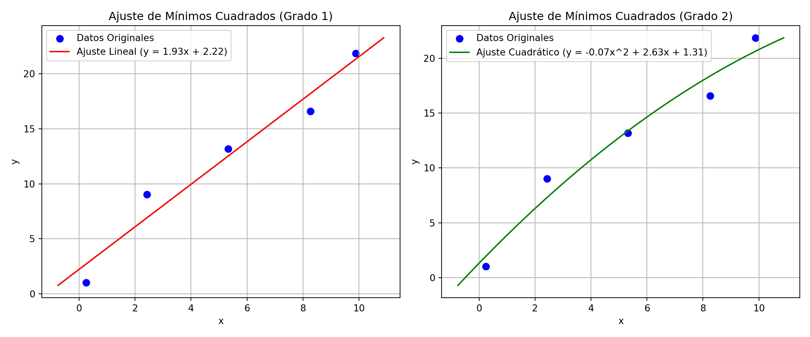
## Valores estimados (polinomio de grado 1)## y_pred_deg1: [ 2.69722028 6.9192862 12.51574753 18.19866985 21.3352835 ]## Valores estimados (polinomio de grado 2)## y_pred_deg2: [ 1.96107922 7.30216712 13.38001576 18.38300516 20.63994011]## Error Cuadrático Medio (MSE) para el ajuste lineal (Grado 1): 2.1032## Error Cuadrático Medio (MSE) para el ajuste cuadrático (Grado 2): 1.7126Dada la función de Runge \(f(x) = \frac{1}{1+25x^2}\), halla el polinomio de grado menor o igual que 20 que mejor aproxima la función en el sentido de mínimos cuadrados en \([-5, 5]\), tomando como datos los valores de \(f(x)\) en 100 nodos igualmente espaciados.
##
## Coeficientes del polinomio de grado 20 para la función de Runge:## [ 2.61345238e-10 -3.43260270e-20 -3.37998146e-08 3.95650468e-18
## 1.87244031e-06 -1.91729007e-16 -5.80358770e-05 5.07569890e-15
## 1.10293931e-03 -7.98090656e-14 -1.32458677e-02 7.58512077e-13
## 9.99316409e-02 -4.24009903e-12 -4.55626100e-01 1.28962972e-11
## 1.15679231e+00 -1.79637178e-11 -1.39664057e+00 6.67859064e-12
## 5.76186735e-01]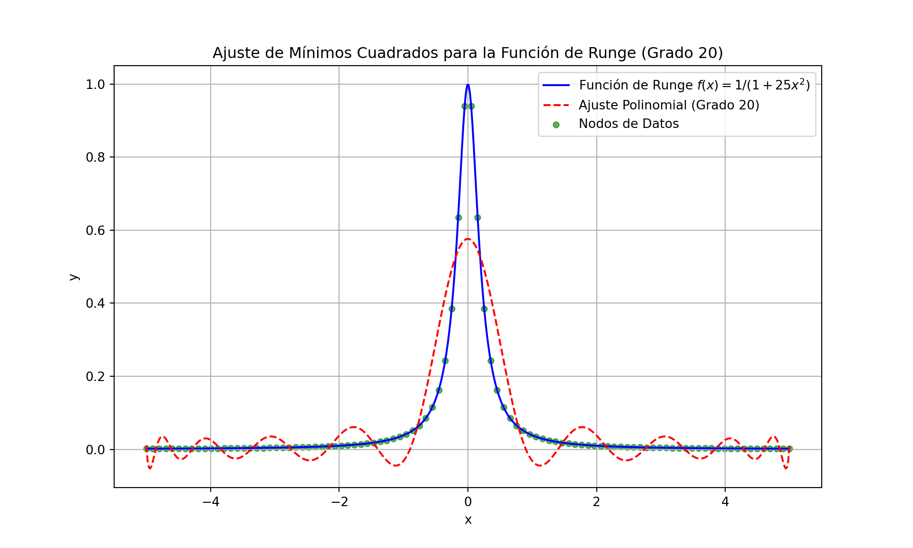
##
## Error Cuadrático Medio (MSE) para el ajuste de la función de Runge (Grado 20): 0.00557896Última revisión: 07 de diciembre, 2025